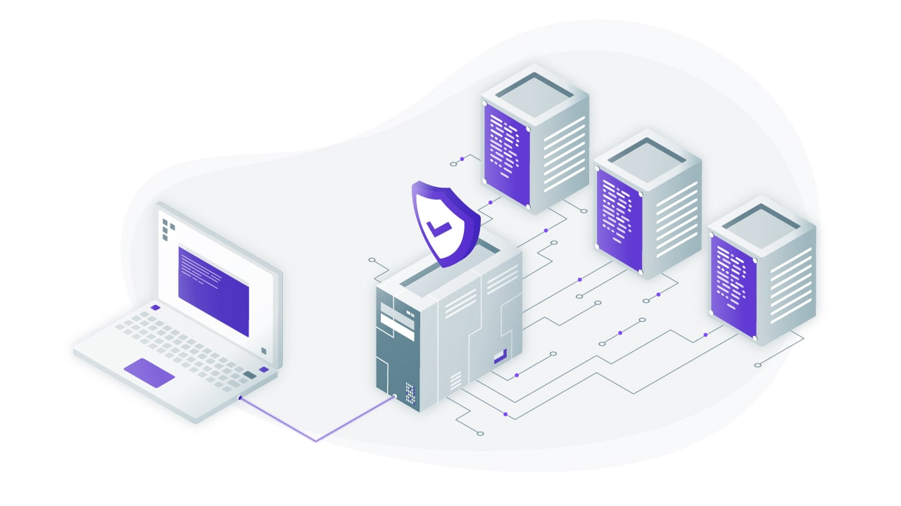

Tools & Innovations
 |
Gen-Bot |
I have Created a Gen-Bot that knows your business and enables your team through conversation. Navigate organizational needs fluently and efficiently. Answer frequently asked questions, increase personal productivity, and more. |
|
|---|---|---|---|
 |
E-Letter Generator |
This specific tool Reduce Lot of Manual Efforts and Mainly Focused for HR department Form can be accessible for employees to raise a request. Once its get approved By concern HR . Employee directly receive the requested Letter in PDF format . |
|
|  | Azure Jumphost Automation Tool |
azvpn-jumplogin scripts that Automate VPN connection with Any env and Quick Jumphost Login including prod. may useful for team to perform activities much faster than usual |
|
 |
Auto-Pod-Maintainer |
Script that running in a Background to Monitor a Kubernetes nodepools to make sure nodes and pods are healthy. This script help to remove unhealthy pods like Error, Terminated, ect.. and make the Customer Applications always available |